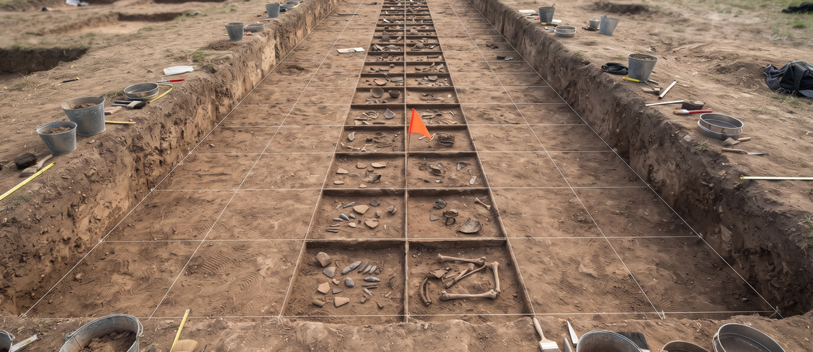

What it does
The tool generates a timeline of system events from log files, to reconstruct attack sequences, and supports different timestamp formats. Usage, as the README gives it: ./analyze-forensic-timeline-generator [params]. Its one requirement is pandas>=2.1.0.

Parameters
| Parameter | What the README says |
|---|---|
-o | No description provided |
-tsf | No description provided |
-k | Keywords to filter for in log entries. |
-v | Enable verbose output for debugging. |
--no-header | Omit the CSV header in the output file. |
Exit status, stated exactly
The tool exits 1 if the output CSV cannot be written, or if any named log file could not be read. Exit 0 means the timeline was written and every named log file was read.
Stated limits
-o and -tsf are both listed with no description provided, and this page does not guess at either. An earlier -p / --priority option was removed in 2026. It accepted a minimum priority but never filtered anything, because the log lines this tool parses carry no priority field. Use -k to filter by keyword instead. The licence line at the close of the README is a copyright line only, with no licence named.